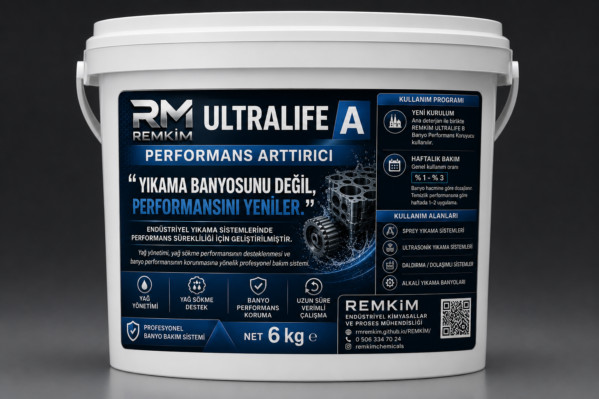
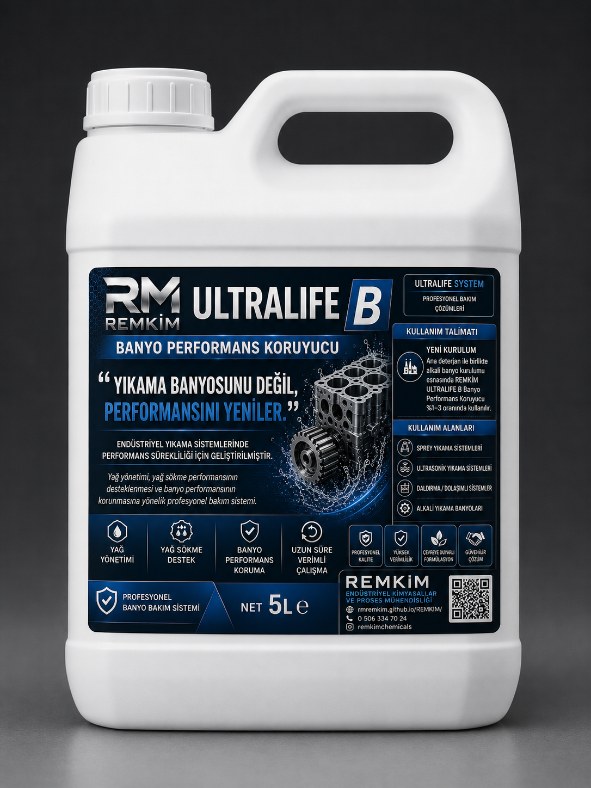
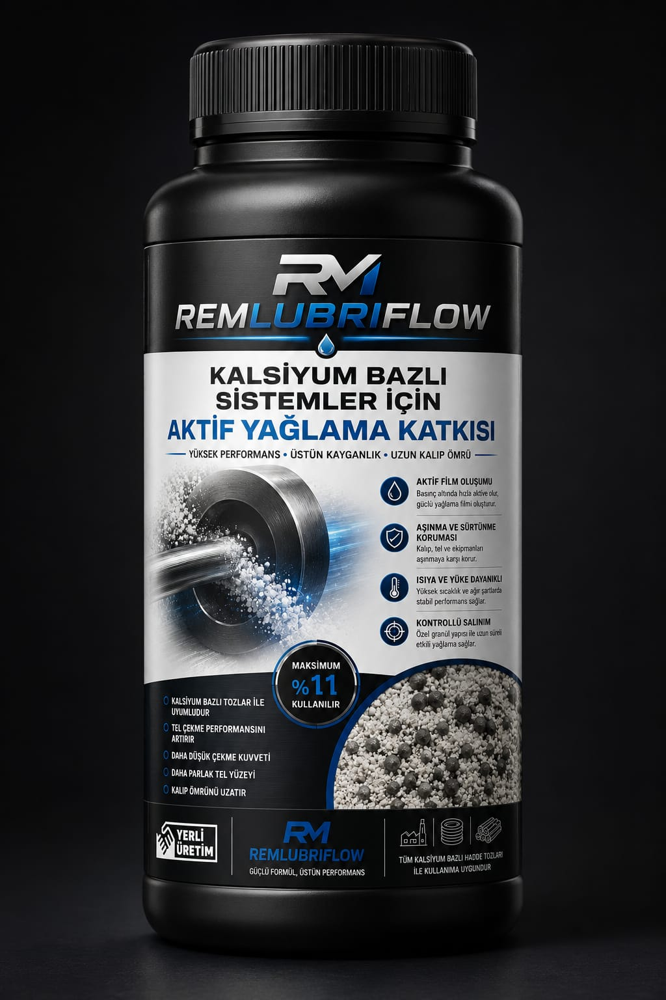
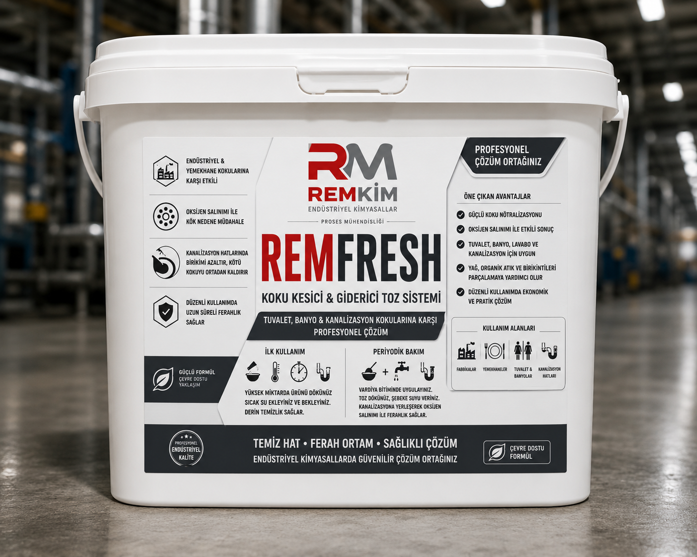

REMKİM
Endüstriyel Kimyasallar
&
Proses Mühendisliği
Endüstriyel Kimyasallar
&
Proses Mühendisliği
Alkali ultrasonik yıkama banyoları ve otomatik endüstriyel yıkama sistemleri için geliştirilen iki bileşenli performans yenileme ve bakım sistemi. Mevcut banyonun performansını destekleyerek uzun süreli ve kararlı çalışma hedeflenir.
Yıllık Deneyim
Teknik Çalışma
Proses Çözümü
Teknik Destek
Alkali ultrasonik yıkama banyoları, otomatik endüstriyel yıkama makineleri ve alkali yıkama sistemleri için geliştirilen iki bileşenli performans yenileme ve bakım sistemi.


REMKİM Performance Renewal System®, yıkama banyosunun çalışma süreci boyunca kontrollü kimyasal destek sağlayarak performansın korunmasına yardımcı olur.
ULTRALIFE A'nın ilk banyo kurulumu sırasında kullanılması, sistemin başlangıçtan itibaren daha kararlı çalışmasını destekler.
ULTRALIFE B ile birlikte 2 : 1 oranında uygulandığında sistem performans yenileme moduna geçer.
Banyo performansının korunmasına, kir yükünün yönetilmesine ve daha uzun süre verimli çalışmasına katkı sağlar.
Endüstriyel yıkama proseslerinde sürdürülebilir performans, yalnızca doğru kimyasal seçimiyle değil; prosesin doğru yönetilmesiyle mümkündür.
Prosesin mevcut çalışma koşulları değerlendirilir.
Doğru ürün ve doğru dozaj ile sistem desteklenir.
Yıkama performansının uzun süre korunması hedeflenir.
Her proses için uygulamaya özel teknik danışmanlık sunulur.
Endüstriyel yıkama proseslerinde asıl maliyet yalnızca kimyasal tüketimi değildir. Plansız banyo değişimleri, üretim duruşları ve performans kayıpları da işletme verimliliğini doğrudan etkiler.
Kimyasal satmaktan çok, yıkama prosesinin kararlı ve verimli çalışmasını desteklemeyi hedefler.
Performansı düşen banyolarda kontrollü kimyasal destek sağlayarak temizleme veriminin korunmasına katkı sunar.
Doğru uygulama ile yeniden banyo kurulum sıklığının azaltılmasına ve proses sürekliliğinin desteklenmesine yardımcı olur.
REMKİM; endüstriyel kimyasallar, yüzey işlem teknolojileri ve proses mühendisliği alanlarında faaliyet gösteren yerli bir üreticidir. Amacımız yalnızca ürün sunmak değil, üretim süreçlerinin daha verimli, daha güvenli ve daha sürdürülebilir hale gelmesine katkı sağlamaktır.
Her tesisin üretim şartları farklıdır. Bu nedenle standart ürün yerine prosese uygun çözümler geliştiriyoruz.
Ultrasonik yıkama, tel çekme, metal yüzey işlemleri ve endüstriyel temizlik alanlarında özel formülasyonlar geliştiriyoruz.
Satış sonrası teknik destek sağlayarak proses performansının sürekliliğini hedefliyoruz.
Her ürün, belirli bir endüstriyel prosesin ihtiyaçlarına yönelik geliştirilmiş, performans odaklı bir REMKİM çözümüdür.
Ultrasonik yıkama sistemlerinde ağır yağ, karbon ve proses kirlerini yüksek performansla temizleyen alkalin konsantre.
ULTRALIFE A ile birlikte çalışmak üzere geliştirilmiş performans dengeleme bileşenidir. Yıkama banyosunun kontrollü şekilde desteklenmesine katkı sağlayarak sistemin kararlı çalışmasına yardımcı olur.

Tel çekme proseslerinde sürtünme kontrolünü desteklemek, takım ömrünü artırmak ve yüzey kalitesinin sürekliliğine katkı sağlamak amacıyla geliştirilmiş proses performans çözümüdür.

Endüstriyel tesislerde hijyen, koku kontrolü ve ortak kullanım alanlarının bakımına yönelik geliştirilmiş profesyonel temizlik çözümüdür.
Kimyasal seçiminden çok daha fazlası... Üretim hatlarının performansını artırmaya yönelik proses çözümleri.
Ağır yağ, karbon, talaş ve proses kirlerinin kontrollü temizliği.
Sürtünmeyi azaltan ve takım ömrünü artıran proses çözümleri.
Metal şekillendirme proseslerinde verim odaklı yardımcı ürünler.
Yüzey hazırlama ve proses stabilitesini destekleyen çözümler.
Metal yüzeylerin temizlenmesi ve proses hazırlığı.
Fabrika, üretim alanları ve ortak kullanım bölgeleri için profesyonel çözümler.
Her işletmenin prosesi farklıdır. Bu nedenle hazır çözümler yerine, prosesinize uygun teknik yaklaşım geliştiriyoruz.
Mevcut yıkama veya üretim prosesinizi birlikte değerlendiriyoruz.
İhtiyaca uygun ürün veya sistem önerisini oluşturuyoruz.
Doğru dozaj, doğru kullanım ve teknik uygulama desteği sağlıyoruz.
Performansı birlikte takip ederek prosesin sürdürülebilirliğine katkı sağlıyoruz.
Her üretim hattı farklıdır. Bu nedenle standart ürün önermek yerine, prosesi analiz ederek ihtiyaca uygun çözüm geliştiriyoruz.
Mevcut üretim süreci, kullanılan kimyasallar ve karşılaşılan problemler değerlendirilir.
Laboratuvar ve saha testleri ile en uygun formül belirlenir.
Kimyasal tüketimi, temizlik performansı ve proses kararlılığı optimize edilir.
Teknik destek ve sürekli iyileştirme yaklaşımıyla proses performansı takip edilir.
Üretim süreçlerinde sürdürülebilir performans için yalnızca ürün değil, teknik bilgi ve proses desteği sunuyoruz.
Kimyasal tüketimini ve proses maliyetlerini optimize etmeye yönelik çözümler.
İhtiyaca özel formül geliştirme ve saha doğrulama çalışmaları.
Üretim hattına uygun uygulama önerileri ve sürekli teknik destek.
Daha uzun banyo ömrü, daha düşük tüketim ve daha kararlı prosesler.
Her üretim hattı farklıdır. Uygun kimyasal ve doğru proses yönetimiyle verimlilik artışı hedeflenir.
Üretim proseslerinin farklı aşamalarına yönelik geliştirilen mühendislik odaklı çözümler.
Yağ, karbon, talaş ve proses kirlerinin etkin temizliği.
Sürtünmeyi azaltan ve proses kararlılığını destekleyen çözümler.
Kalıp ve metal yüzeylerin korunmasına yönelik yardımcı ürünler.
Fabrika ve üretim alanları için profesyonel hijyen çözümleri.
Farklı üretim proseslerine yönelik mühendislik yaklaşımıyla geliştirilen çözümler.
Ürünlerimiz, teknik bilgi talepleriniz ve prosesleriniz için bizimle iletişime geçebilirsiniz.